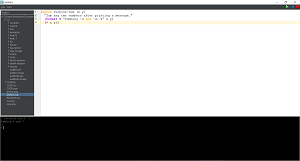
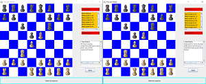
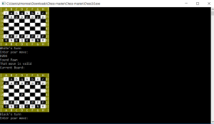
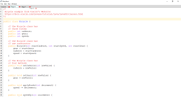

What am I up to?
My name is Zach Monroe. I am a programmer, a student, a chef, an explorer, a photographer, and much more. I've had the opportunity to work on a lot of cool projects. If you're curious, take a look at what I've been up to below!
Microsoft Intern Project - CloudFit
May 2019 - August 2019
During my internship at Microsoft in the summer of my senior year, I was assigned to create a library for health analysis of Microsoft's internal Azure Deployment Services. CloudFit was a logging api hooked up to Kusto (Microsoft Azure Data Explorer) which logged minimal system information in order to track the health of both the system and current deployments. The hope was to provide a way to detect deployment failures and automate the re-deployment process.
DecomPy - An Adaptive Machine Learning Decompiler
October 2018 - April 2019
DecomPy is an adaptive machine learning decompiler / deoptimizer toolchain created as a proof of concept for my senior capstine project. Our team (Vatricia Edgar, Joshua Goralczyk, Salmen Ahmed, YiZhuang Garrard) was asked to create a tool which could use machine learning to learn to undo the optimizations that a compiler performs thus making the source code readable again. We did so by lifting the compiled c code (from either clang or gcc) to llvm and then training a reinforcement agent to make swaps on the llvm code through "semantically equivalent code snippets" until the code resembled the original. Our team faced many issues early on due to a lack of compiler / decompiler familiarity, but overall it showed the feasibility of pursuing such a tool.
Common Lisp Interactive Development Environment (CLIDE)
May 2017 - Present
Common lisp environment developed in python3 (made to be similar in feel to the jetbrains suite rather than emacs)

Java based Chess
January 2017 - May 2017
JChess is a Java based two player chess program. Our team (Vatricia Edgar, Jonathan Bush, and Timothy Cuprak) was in charge of debugging an extremely buggy code with almost no documentation. We based our development heavily on a test driven development style using unit testing and integration testing with both mockito and JUnit. It is a client server based program and the server is multi-threaded to handle multiple pairs of clients.
C++ uint64_t based Bitboard Chess
November 2016 - December 2016
Designed an efficient implementation (each turn is O(1) except checkmate and check which are O(n)) of 2 player chess.
Python 3.5 / tkinter IDE "Morpheus"
November 2015 - August 2016
An early attempt at creating a python3 IDE I did my first year of college. It was both the inspiration and the starting point for my later lisp IDE (CLIDE). This IDE was designed so that I could code both Java and Python in the same Environment (At the time I was constantly switching between IDLE (python) and Eclipse (Java) having yet to discover the wonder of the Jetbrains suite. I based it off IDLE but incorporated fixes to grievances (i.e. added multiple tab capabilities)
